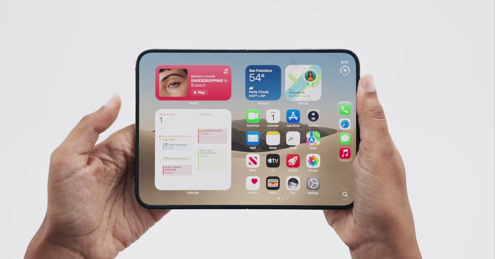
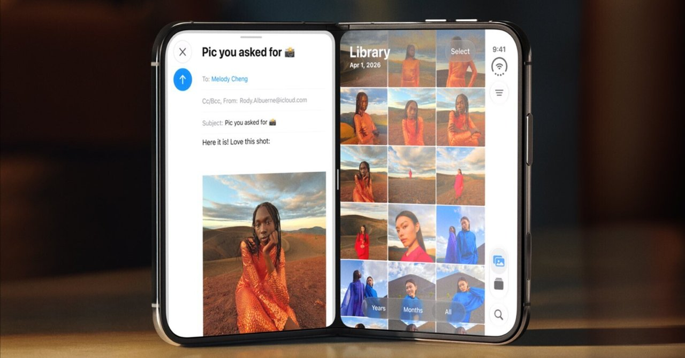

エディトリアル・パートナーとは
エディトリアル・パートナーは、経営者や個人事業主に伴走する「発信活動のパートナー」です。プロの編集者があなたの顧問となり、発信にまつわる活動をサポートします。
まとまった文章や企画書などを準備していただく必要はありません。企画、構成、執筆までこちらですべて進めます。むしろまとまっていないくらいの話のほうがテンションが上がります。
現在は、ご自身の名義のnoteやXなどで公開できる記事原稿を中心にサポートさせていただきます。
エディトリアル・パートナー
エディトリアル・パートナーは、
経営者や個人事業主に伴走する
「発信のパートナー」です。
エディトリアル・パートナーは、経営者や個人事業主に伴走する「発信活動のパートナー」です。プロの編集者があなたの顧問となり、発信にまつわる活動をサポートします。
まとまった文章や企画書などを準備していただく必要はありません。企画、構成、執筆までこちらですべて進めます。むしろまとまっていないくらいの話のほうがテンションが上がります。
現在は、ご自身の名義のnoteやXなどで公開できる記事原稿を中心にサポートさせていただきます。
「あなたの視点、あなたの言葉で」
発信したいけれど、日々の仕事が優先になり、原稿を書く時間が取れない。
話せることはたくさんあるのに、何を記事にすればよいか決まらない。
経験や専門性はあるが、自分にとって当たり前すぎて、伝える価値が分からない。
自分で書くと、説明が長くなる。専門外の人にも伝わる形にしたい。
文章を整えると自分らしさが消えてしまい、自分の名前で出すことにためらいがある。
お客様や採用候補者に、仕事内容に加えて、考え方や判断の背景まで知ってもらいたい。

note UIデザイナー視点で見る「iPhone Duo」｜Nob NUKUI | THE GUILD note.com/nobtaka
note 活用されなかった「iPadOSの努力」。DuoはなぜiOSを選んだのか？｜Nob NUKUI | THE GUILD note.com/nobtakaソフトウェアデザイン会社「株式会社Super LuckyBoy Company」の代表・貫井伸隆さんに、エディトリアル・パートナーを活用いただきました。
自社で開発している商品についての想い、ストーリーについて紹介する記事
自分について紹介する記事
世の中のニュースや出来事を、自分視点で解説する記事（貫井さんの例）
＋α 日々の雑談
*記事の長さやテーマの複雑さによって変わります。また制作にあたり、「完成原稿だけ確認し、なるべく最小限のやり取りで進めたい」「制作前に構成を確認してから進めたい」など、ご本人のかけたいリソースに応じて対応いたします。発信活動に確保できる時間を最初にヒアリングいたします。また、専門的な内容や非公開情報、センシティブな内容については、リソースに関わらず必ずご本人や関係者に事実確認をさせていただきます。
対応できます。ただし、最初は1人あたりのエンゲージメントが高いnoteやX記事などの長文の発信をおすすめさせていただいております。動画は「話し方」「撮り方」「企画性」など、向き合う指標が複雑になってくるため、まずは長文コンテンツを通して、徹底的に自分と向き合う時間が大切だと考えます。そのステップを経てから動画をスタートするのが、時代やアルゴリズムに左右されないチャンネルにする適切な進め方だと考えています。
気にしないでください。パートナーが一緒になって探します。最近やった仕事、休みの日の過ごし方、買おうか迷っている物や恋愛相談など、他愛もない話にもあなたらしさは必ず詰まっています。
順序立てて話す必要はありません。質問に答えながら、具体的な出来事や考えを少しずつ共有していただければ大丈夫です。手元のメモや資料も使えます。
対応可能ですが、なるべく個人名義のアカウントをおすすめしています。ご本人名義の記事を想定しています。ご本人の経験や考えをもとに原稿を作り、内容と表現を確認いただきます。編集協力の表記などは、掲載先の方針も踏まえて事前に相談します。
はい、可能です。原稿やメモを見せていただき、どこを残し、どこを掘り下げるとよいかを考えます。
必須ではありません。こちらから強要したり、推奨することは一切いたしません。
もちろん問題ありません。あくまでもお話いただいた内容を元に制作いたしますので、その場で話しきれなかったことやニュアンスが間違って伝わることが発生するかと思います。修正・加筆はむしろ大歓迎です。
すべてご本人に帰属します。制作物の著作権も料金に含まれており、公開後パートナー側は一切の著作権を所有いたしません。
制作補助にAIを使う場合があります。用途は主に対話データを読みやすくするための処理と、仕上げた記事の誤字や脱字のチェックです。
使用するAI・ツールは、すべて入力した情報を再学習しないよう設定いたします。取材内容や未公開資料の扱い、利用できないツールなどに条件がある場合は、着手前に確認し、その条件に合わせて進めます。
私たちのサービスは、ご本人の言葉で語ったことをもとに書き上げ、それを公開するかどうかなど、いかなる最終判断はご本人にしていただきます。そのため意図しない表現や「知らない間に公開されていた」など、ご本人が関与しない状況で発信することは無いよう配慮しています。
私たちは制作で時間がかかる「最初の形づくり」を伴走しながらお手伝いするものであり、すべての権利はご本人にあります。ですから、代行を使っている事実だけで読者を騙すことではないと考えます。その上で、制作に関わった者を明確にするため、編集協力としてクレジットを入れていただくのはまったく問題ありません。

1996年生まれ。テックメディア「ギズモード・ジャパン」の編集者として入社後、動画事業の立ち上げなどを経て独立。2021年〜フリー編集者・動画ディレクター。